Track Leads from Multiple Sources in One Google Sheet
Your leads come from everywhere — Facebook ads, Typeform intake forms, website contact pages — and they all end up in different places. Some sit in Meta's lead center, some in Typeform's dashboard, some in email. You check three tools, copy data into spreadsheets, and hope you haven't missed anyone. This Make.com tutorial shows you how to track leads from multiple sources in one Google Sheet automatically, using upsert logic that prevents duplicate entries when the same person submits through more than one channel.
Get one tested automation tutorial per week — no fluff, no spam. Subscribe free →
Why Most Small Businesses Lose Leads Across Multiple Channels
Most businesses run more than one lead capture channel. A Facebook ad campaign collects names and emails. A Typeform intake form qualifies prospects on the website. A simple contact form catches general inquiries. The problem is not capturing the lead — it's knowing where every lead lives and which channel they came from. When the data sits in three different dashboards, follow-up is slow, leads slip through the cracks, and no one can answer the question: "How many new leads came in this week?" A single Google Sheet that auto-populates from every source solves this. And upsert logic — update if the lead exists, insert if they're new — ensures one person never appears twice, even if they submit through multiple channels.
What "Upsert" Means and Why It Matters for Lead Tracking
Upsert is a database concept: update a record if it already exists, or insert a new one if it doesn't. Without upsert logic, the same person who fills out your Facebook ad form and later submits your Typeform intake will appear as two separate rows in your spreadsheet. You end up with duplicate data, conflicting follow-up, and a lead tracker you can't trust. With upsert, Make.com checks your Google Sheet for an existing row with the same email address before adding anything. If the email already exists, it updates the row — changing the Source column to show both channels and refreshing the Last Updated date. If the email is new, it adds a fresh row. The result: one clean row per person, no matter how many times they submit across different channels.
How Upsert Logic Works
| Scenario | What Make.com Does | Result in Google Sheet |
|---|---|---|
| New lead submits Facebook ad | Email not found → Insert new row | New row: Source = "Facebook" |
| Same lead submits Typeform later | Email found → Update existing row | Same row: Source = "Facebook; Typeform", Last Updated refreshed |
| Different lead submits website form | Email not found → Insert new row | New row: Source = "Website" |
| Same lead submits website form again | Email found, same source → Update row | Same row: Source unchanged, Last Updated refreshed |
Once you build this upsert pattern in Make.com, you can reuse it for any lead source — Facebook, Typeform, website forms, or any future integration. Start free on Make.com →
How the Multi-Source Lead Tracking Automation Works
This automation uses three separate Make.com scenarios — one per lead source — that all write to the same Google Sheet. Each scenario follows the same pattern: catch the lead, search the sheet by email, and then either update the existing row or add a new one. The scenarios are: Website form leads (via Custom Webhook), Typeform intake form leads (via Typeform INSTANT trigger), and Facebook Lead Ad leads (via Facebook Lead Ads module). All three share the same upsert logic: search by email, route to update or insert, and track the source. Make.com requires separate scenarios because each trigger module runs independently, but the upsert logic stays identical across all sources.
You can build all three scenarios on Make.com's free plan — no credit card required. Start free on Make.com →
What Gets Tracked in the Lead Tracker Master Sheet
| Column | Field | Example Value |
|---|---|---|
| A: Email | Email address (lookup key for upsert) | sarah[at]brightwave.co |
| B: Name | Full name | Sarah Mitchell |
| C: Phone | Phone number | +1 555 0142 |
| D: Source | Which channel(s) the lead came from | Facebook; Typeform |
| E: First Seen | Date the lead first appeared | 2026-03-01 |
| F: Last Updated | Date of the most recent submission | 2026-03-03 |
| G: Notes | Project details, ad name, or form comments | Summer Promo 2026 campaign |
Don't Use Slack? Alternatives That Work the Same Way
This guide focuses on the core lead tracking workflow without a notification step — but you can add one easily. Add a Slack module on the "New Lead" branch of the Router to notify your team only when a brand new lead enters the system, not on every update. If your team doesn't use Slack, swap it for Gmail, Microsoft Teams, or Google Chat — the rest of the workflow stays identical.
How to Build the Website Webhook Scenario (Scenario 1)
- We start with the website webhook scenario because it's the easiest to test — you send data directly to a URL without needing a Facebook ad or Typeform submission.
- Create a free Make.com account — no credit card required. Click "Create a new scenario" on your dashboard.
- Click the + button on the canvas and search for "Webhooks" — select "Custom webhook." Click "Add" to create a new webhook, name it (e.g. "Website Contact Form"), and click Save. Make.com generates a unique URL — this is the endpoint your website form will send data to.
- Click "Run once" to activate the webhook listener, then open a new browser tab and paste the webhook URL with test data appended as URL parameters. Use a URL like: https://hook.eu1.make.com/YOUR-CODE?name=Maria%20Santos&email=maria[at]thegreenleaf.co&phone=+447700900123&source=Website¬es=Inquiry%20via%20contact%20page — the browser will show "Accepted" and Make.com will capture the five fields automatically.
- 💡 Pro Tip: For testing, you don't need a real website form. Simply paste the webhook URL with parameters into your browser — Make.com receives it identically to a form POST request. When you later connect a real contact form, just set the form action to this same webhook URL.
- Add a Google Sheets module — click the + button after the webhook, search for "Google Sheets" and select "Search Rows." Connect your Google account, select your "Lead Tracker Master" spreadsheet, and set Table contains headers to "Yes."
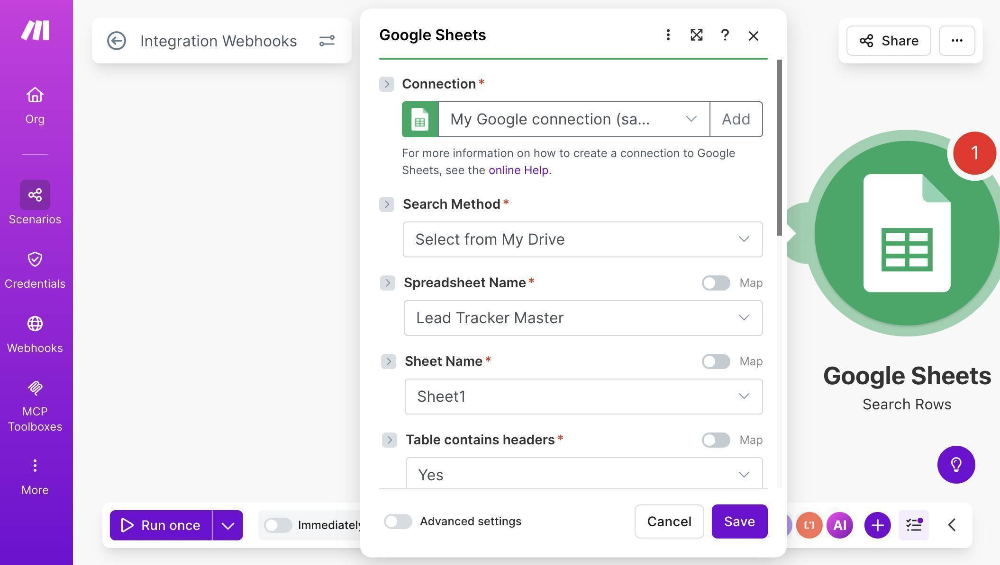
Google Sheets Search Rows — connection configured with Lead Tracker Master spreadsheet selected - Configure the search filter — set Column range to "A-CZ", then under Filter select "Email (A)" as the column, "Text operators: Equal to" as the operator, and map the email field from your webhook module as the value. This tells Make.com to look for an existing row where the email matches.
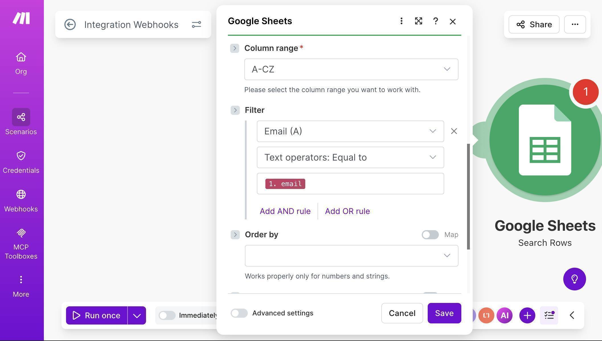
Search Rows filter — Email column A filtered by webhook email address using Text operators Equal to - Add a Router module — click the + button after Search Rows and select "Router" from the flow control tools. The Router splits your scenario into two branches: one for existing leads (update) and one for new leads (insert).
- Configure the first branch filter — click the line between the Router and the first branch module. Label it "Lead Exists" and set the condition to: "2. Total number of bundles" — "Greater than" — "0". This branch runs only when Search Rows found a matching email.
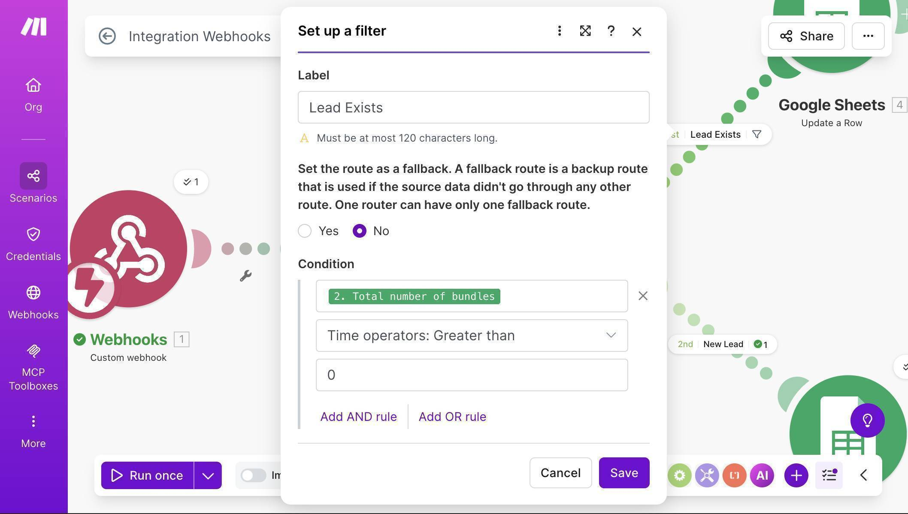
Router filter — Lead Exists condition with Total number of bundles greater than 0 - On the "Lead Exists" branch, add a Google Sheets "Update a Row" module. Connect it to the same spreadsheet and map the fields. For the Row number, map the row number from the Search Rows result — this tells Make.com which row to update.
- Map the Update a Row fields — Email (A) maps to the existing email from Search Rows. Name (B) and Phone (C) map from the webhook data to keep details fresh. For Source (D), use a formula that appends the new source only if it's not already listed. In the formula editor, enter: if(contains(2. Source (D); 1. source); 2. Source (D); 2. Source (D) + "; " + 1. source) — this prevents "Website; Website" duplicates while correctly producing "Facebook; Website" when a lead comes from a second channel.
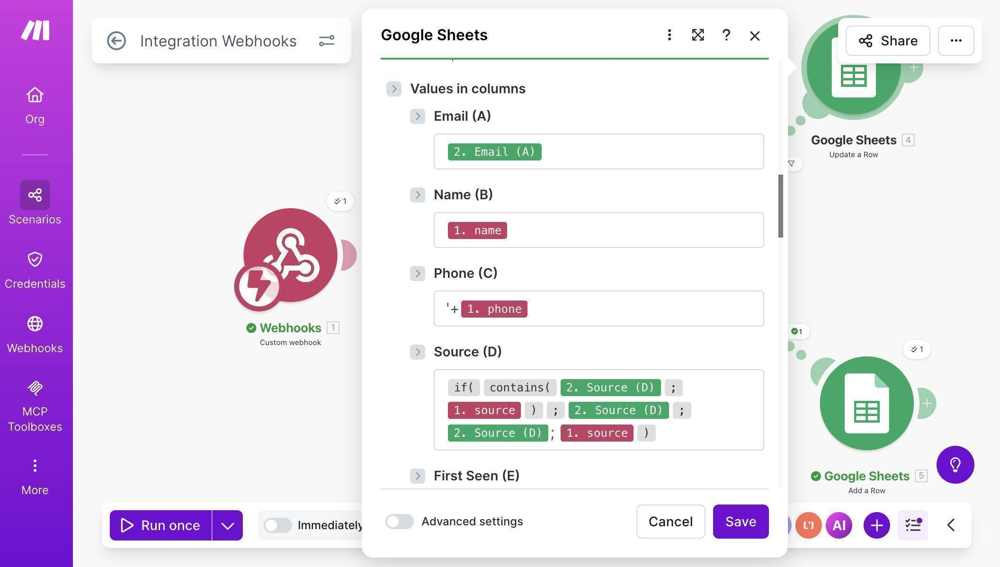
Update a Row field mapping — Email, Name, Phone and Source formula with contains logic to prevent duplicate sources - For the remaining Update fields — First Seen (E) maps to the existing value from Search Rows (you never overwrite the original date). Last Updated (F) uses the formula: formatDate(now; "YYYY-MM-DD") — this stamps today's date every time the row is updated. Notes (G) maps to the existing notes from Search Rows to preserve the original entry.
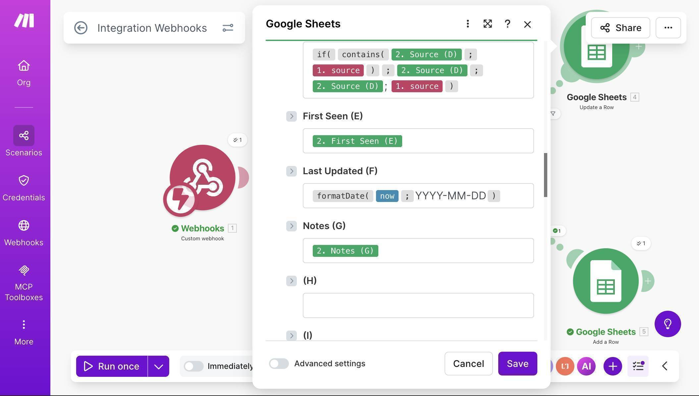
Update a Row continued — First Seen preserved from existing row, Last Updated with formatDate formula, Notes kept from original - 💡 Pro Tip: The Source formula uses the if/contains pattern to prevent duplicate source names: if the source already contains "Website", it keeps it as-is. If not, it appends "; Website" to the existing value. When you clone this for Facebook and Typeform scenarios, the same formula works — just the source value changes.
- Configure the second branch as a fallback route — click the wrench icon on the second Router branch line. Set "Set the route as a fallback" to Yes. A fallback route runs only when no other branch matches — so if the lead doesn't exist (Search Rows returned 0 results), this branch fires automatically. No condition needed.
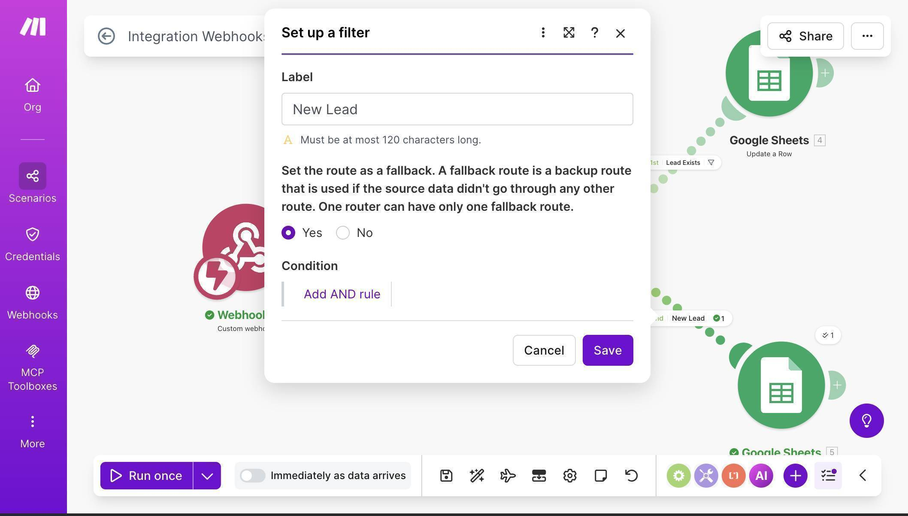
Fallback route configuration — New Lead branch set as fallback, no condition required - 💡 Pro Tip: Using a fallback route instead of an explicit "equals 0" filter is cleaner and more reliable. If you later add more branches to the Router, the fallback always catches whatever didn't match — no risk of a lead slipping between two filters.
- On the fallback "New Lead" branch, add a Google Sheets "Add a Row" module. Map all fields directly from the webhook: Email (A) from the webhook email, Name (B) from name, Phone (C) from phone, Source (D) from source, First Seen (E) using formatDate(now; "YYYY-MM-DD"), Last Updated (F) using the same formula, and Notes (G) from notes.
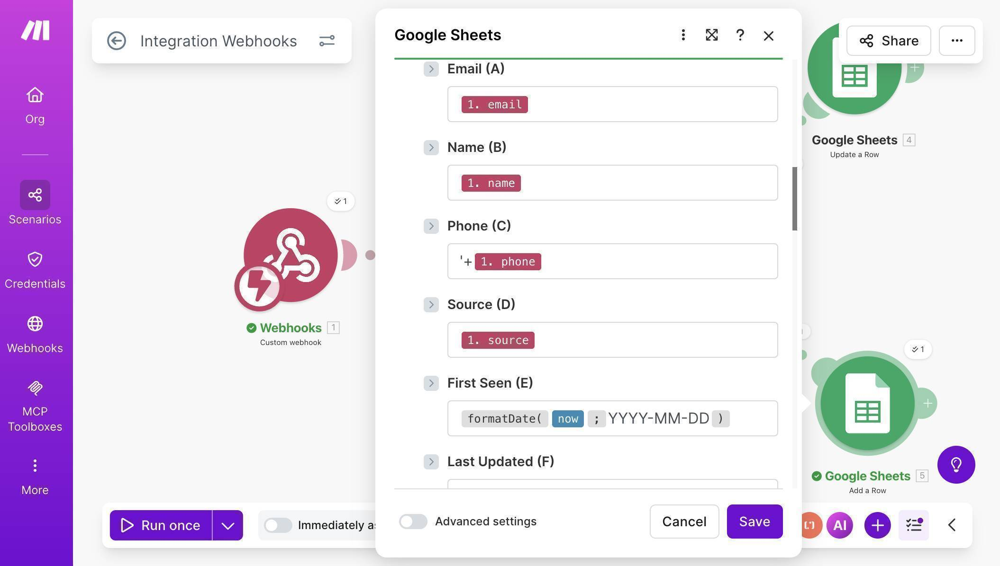
Add a Row field mapping — all fields mapped directly from webhook data with formatDate for dates - Save the scenario — your canvas should now show four connected modules: Custom Webhook → Google Sheets Search Rows → Router → two branches (Update a Row and Add a Row).
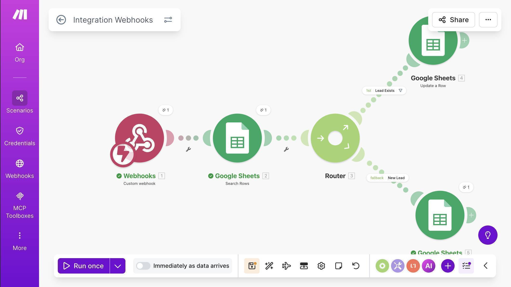
Complete webhook scenario — Custom Webhook, Search Rows, Router with Lead Exists and fallback New Lead branches - Test the upsert logic — click "Run once", then send a new lead via browser URL (use a new email that doesn't exist in the sheet). Check your Google Sheet — a new row should appear. Then run again with the same email but change the source parameter to "Referral" — the existing row should update with the new source appended and Last Updated refreshed.
How to Add Typeform as a Second Source (Scenario 2)
The Typeform scenario uses identical upsert logic — the only difference is the trigger module and how fields are mapped from Typeform's response structure.
1. Create a new scenario in Make.com. Click the + button and search for "Typeform" — select the Watch Responses module marked INSTANT. This uses webhooks to trigger the moment someone submits, instead of polling every 15 minutes.
2. Click "Add" to create a new webhook — name it (e.g. "Free Consultation Request webhook"), connect your Typeform account through OAuth, and select your form from the Form ID dropdown.
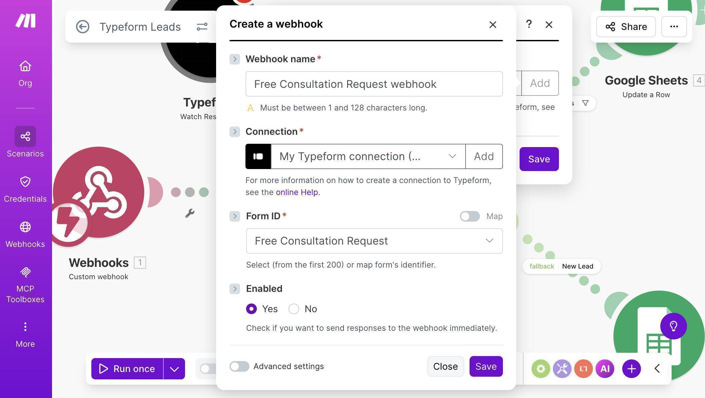
3. Add the same module chain as the webhook scenario: Google Sheets Search Rows (same spreadsheet, same email filter) → Router → Update a Row on the "Lead Exists" branch → Add a Row on the fallback "New Lead" branch.
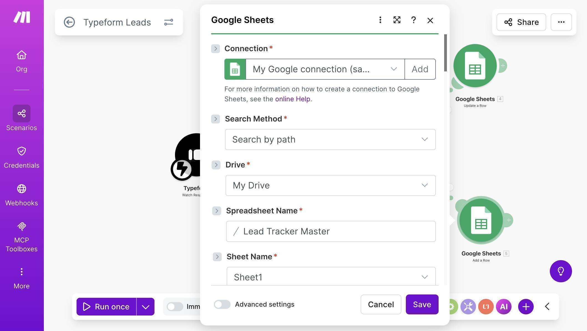
4. The key mapping difference is the Source formula in the Update module. Since Typeform doesn't send a "source" field, you hardcode the source name. In the Source (D) formula editor, enter: if(contains(2. Source (D); "Typeform"); 2. Source (D); 2. Source (D) + "; Typeform") — this uses the literal string "Typeform" instead of a mapped field.
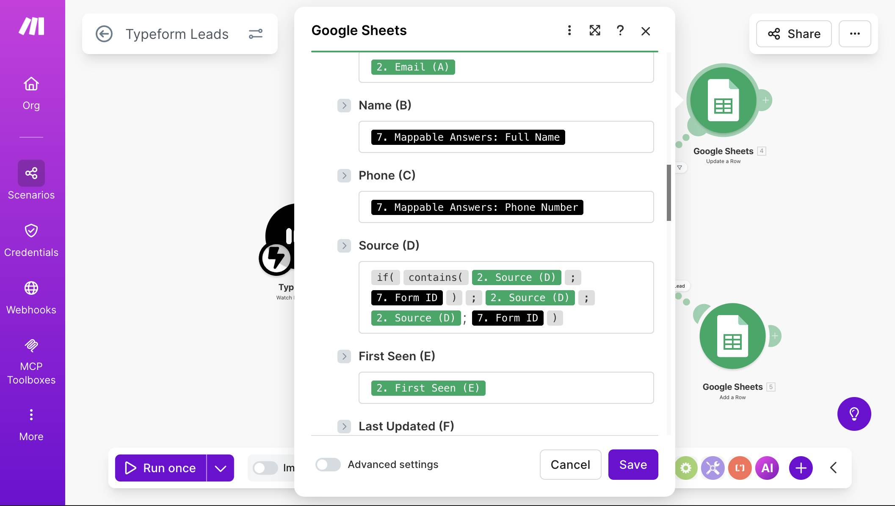
5. Save the scenario. The complete Typeform scenario looks identical to the webhook version — same Search Rows, same Router, same two branches — just with a Typeform trigger instead of a Custom Webhook.
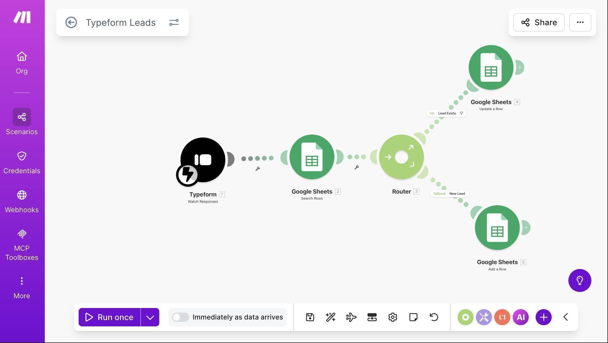
6. Test by submitting your Typeform with a test entry — use an email that already exists in the sheet from the webhook test. The Source column should update to show both channels (e.g. "Website; Typeform") and Last Updated should refresh.
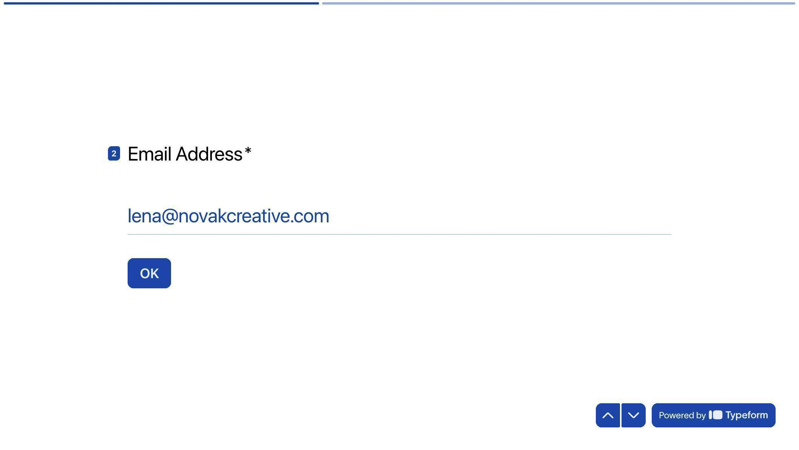
Need a client intake form? Build one in minutes with Typeform's drag-and-drop form builder. Try Typeform free →
How to Add Facebook Lead Ads as a Third Source (Scenario 3)
The Facebook scenario follows the same upsert pattern. The trigger is different, and the field names come from Facebook's lead data structure instead of webhook parameters.
1. Create a new scenario. Click + and search for "Facebook Lead Ads" — select the "New Lead" module (INSTANT webhook version). Click "Create a webhook", connect your Facebook account, select your Page, and choose your lead form (e.g. "Get Your Free Quote").
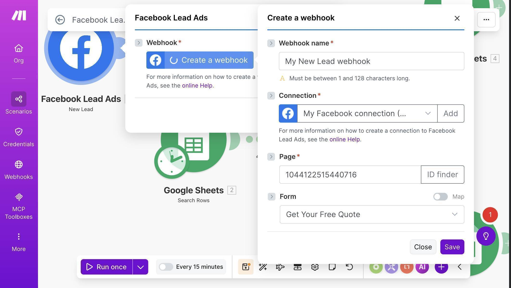
2. Add the same module chain: Google Sheets Search Rows → Router → Update a Row / Add a Row. The structure is identical to the other two scenarios.
3. Map Facebook field data to your Google Sheet columns. For the Add a Row module (new leads): Email (A) maps to Field data: email, Name (B) to Field data: Full name, Phone (C) to Field data: Phone number, and Source (D) is hardcoded as "Facebook".
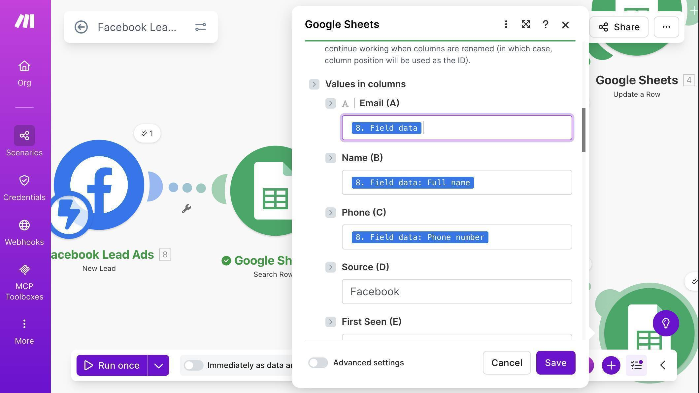
4. For the Update a Row module, the Source formula uses the same pattern with "Facebook" hardcoded: if(contains(2. Source (D); "Facebook"); 2. Source (D); 2. Source (D) + "; Facebook")
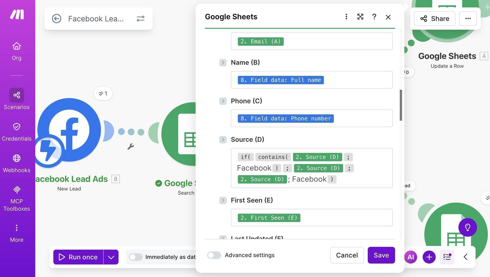
5. Save the scenario. All three scenarios now live in your Make.com dashboard, each handling a different lead source but sharing the same Google Sheet and the same upsert logic.
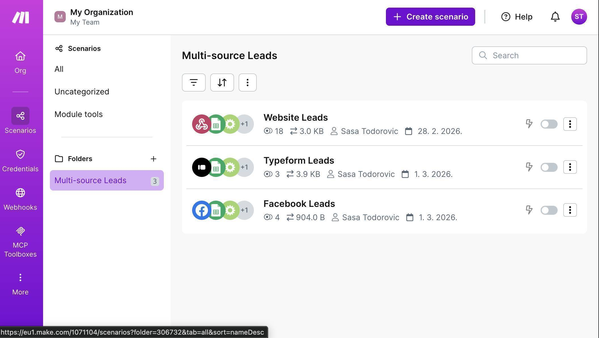
Testing the Complete Multi-Source Setup
Once all three scenarios are active, your Lead Tracker Master sheet populates automatically from every channel. Each lead appears once — with the Source column showing every channel they came through and the Last Updated column reflecting the most recent interaction.
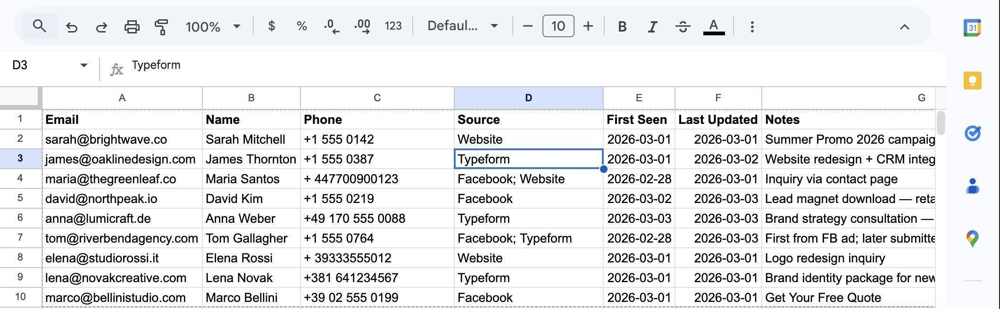
The key rows to verify in your test: a lead that exists only in one source (single source name), a lead that submitted through two channels (both sources joined with a semicolon), and the Last Updated date that changed when a duplicate submission came in while First Seen stayed the same.
Who Should Use This Automation
This workflow is built for any business that captures leads from more than one channel and needs a single source of truth. Agencies running Facebook ads and collecting Typeform intake forms from the same prospects. Freelancers with a website contact form and social media ad campaigns running simultaneously. Consultants who get referrals through multiple channels and need to track first contact. Small businesses spending money on ads and losing track of which leads came from which campaign. If you're manually checking three dashboards and copying data between them, this automation eliminates that work permanently.
Apps Used in This Automation
This workflow connects four tools, all with free tiers. Make.com orchestrates all three scenarios — the free plan includes 1,000 operations per month. Google Sheets stores the Lead Tracker Master with upsert logic — 15 GB of free storage. Typeform captures intake form data — the free plan supports webhook integrations. Facebook Lead Ads captures ad-generated leads — works with any active ad account.
Frequently Asked Questions
What happens if the same person submits through all three channels?
They appear as a single row in your Google Sheet. The Source column shows all three channels (e.g. "Facebook; Typeform; Website"), First Seen keeps the original date, and Last Updated reflects the most recent submission.
Why three separate scenarios instead of one?
Make.com doesn't support multiple triggers in a single scenario. Each lead source needs its own trigger module — but all three scenarios write to the same Google Sheet using the same upsert logic.
Can I add more lead sources later?
Yes. Clone any of the three scenarios, swap the trigger module for your new source (e.g. LinkedIn Lead Gen Forms, Calendly, or another form tool), and adjust the field mapping. The Search Rows → Router → Update/Add pattern stays the same.
What if two submissions arrive at the exact same second for the same email?
At small business volume, this is extremely unlikely. If it happens, one scenario may create a duplicate row because the second scenario's Search Rows ran before the first finished writing. For high-volume use cases (100+ leads per day), consider using Make.com data stores instead of Google Sheets for true atomic upsert operations.
Do I need a paid Make.com plan?
The free plan includes 1,000 operations per month. Each scenario uses 3-4 operations per lead — that's roughly 250-330 leads per month across all three sources combined. For most small businesses, the free plan handles it comfortably.
Why use a Router instead of just trying to update and catching the error?
The Router with a fallback branch is more explicit and easier to debug. You can see exactly which path each lead took in the execution log. Error-handler based upsert works too, but it's harder to explain and troubleshoot — especially for non-technical users.